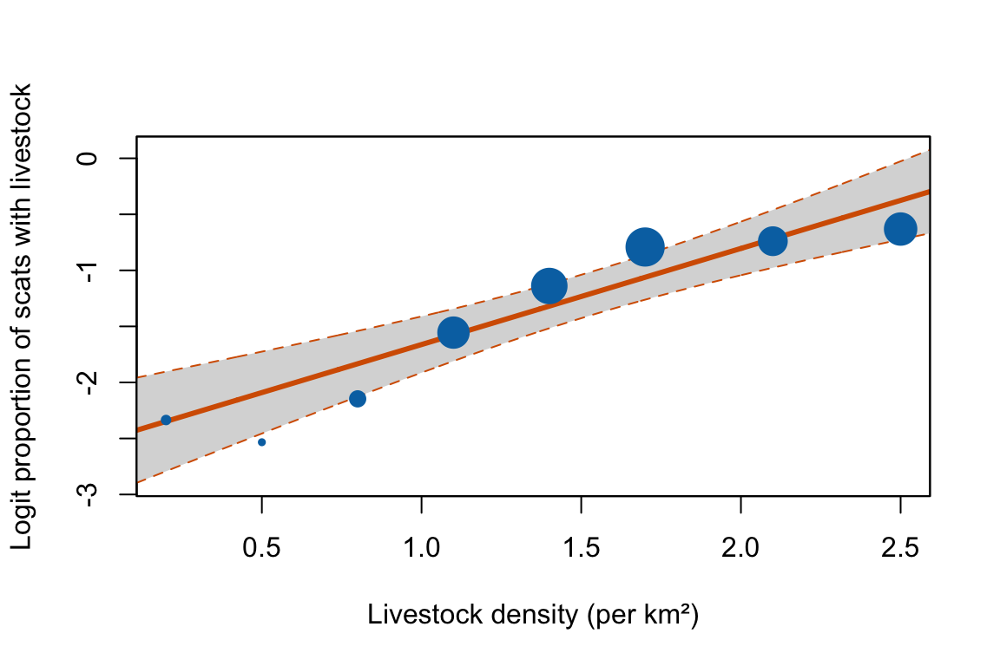

escalc(measure = "SMN",
mi = 10,
sdi = 1.5,
ni = 15)Single-group effect sizes
An overlooked but powerful category
NoteKey points
- Single-group effect sizes summarize one group’s mean, standard deviation, count, or proportion, so they can be meta-analyzed and modeled against moderators.
- For proportions, the logit-transformed proportion (
"PLO", the log odds) is the recommended default. To back-transform,exp(yi)gives the odds andplogis(yi)gives the proportion. - At the end of the proportions section, a worked example shows how to use these effect sizes in a meta-regression.
While most meta-analyses concern the relationships between two variables, often reflecting experimental treatments, sometimes we’re interested in summarizing single-group measurements and then analyzing these measurements in relation to moderators.
For example, imagine you want to understand the drivers of predator attacks on livestock. Various studies have reported predator diets or kill frequencies, allowing you to obtain the proportion of diet that contains livestock (Dhungana et al. 2026). These single-group proportions can be converted to effect size point estimates and sampling variance, allowing you to fit weighted meta-analytic models.
Note
In some situations, even experimental comparisons may potentially be better to analyze as a single-group effect size. For example, if most of your studies used >2 experimental groups or if experimental treatments were extremely different than each other.
Imagine you are doing a meta-analysis on the effects of multipledifferent temperatures on the growth rates of toads. Most studies use several temperature treatments. Instead of calculating two-group effect sizes between each experimental treatment and control (e.g. with SMD or lnRoM), you could calculate single group effect sizes for each group, and then use the experimental temperature directly as a predictor in a metaregression.
In the medical world, these analyses are sometimes called “arms-based meta-analysis”.
Continuous data (means ± SD)
The single-group corollary to SMD and lnRoM consist of continuous data summarized into a mean and measurement of error (e.g. standard deviation, standard error).
There are two main effect size estimands that can be calculated from these types of data: single-group standardized means and log-transformed means.
Single group means
The single group standardized mean is the mean divided by standard deviation (\(yi=\frac{m}{sd}\)) to create a unit-free index, similar to SMD. As such, this effect size can accept values ≤ 0.
In escalc this can be calculated with measure="SMN":
escalc applies a small-sample bias correction to SMN by default; correct = FALSE gives the formula shown above.
SMN, like SMD, can be interpreted as the number of standard deviations the mean is from 0. Given that standard deviation influences the mean, this effect size may be less preferred with overdispersed data (as with SMD). See here, where we discuss how to diagnose overdispersion in your data.
Log-transformed mean
The log-transformed mean (\(yi=\log(m)\)) is a single group corollary to lnRoM. This effect size cannot accept negative values. As with lnRoM, the point estimate for log-transformed mean is not influenced by standard deviation, which is instead accounted for by the sampling variance estimate.
In escalc:
escalc(measure = "MNLN",
mi = 10,
sdi = 1.5,
ni = 15)The SD doesn’t affect the point estimate, but it does affect the sampling variance (\(sd^2/(n m^2)\)). That variance formula is an approximation, and it becomes unreliable when the mean is too close to zero relative to its SD (a large coefficient of variation). So, as with lnRoM, run the Geary-type check (\(m/sd \cdot \sqrt{n} \geq 3\)) described here before using this effect size.
Single group variability
Much as we can meta-analyze differences in variability between two groups with the lnVR and lnCVR effect sizes, we can also summarize the variability of single groups with the log-transformed standard deviation and log-transformed coefficient of variation effect sizes.
Unlike lnVR, which is a unit-free ratio, the log-transformed standard deviation depends on the units of measurement. Switching from grams to kilograms, for example, shifts every value by the same constant. So only compare log SDs among studies that used the same units. Otherwise, account for the units with a study-level moderator or a random effect.
To calculate log-transformed standard deviation in R:
escalc(measure = "SDLN",
sdi = 1.5,
ni = 15)
yi vi
1 0.4412 0.0357 The bias correction described above applies here too.
The log-transformed coefficient of variation (\(\ln(sd/m)\)) is standardized by the mean, just like lnCVR, and can thus be used to compare data with different units of measurements. In R:
escalc(measure = "CVLN",
sdi = 1.5,
mi = 15,
ni = 15)
yi vi
1 -2.2669 0.0364 The bias correction described above applies here too.
Single group proportions
The single group measurements so far concern continuous data. However, there are also single group effect sizes concerned with the probability of binary outcomes (e.g., binomial data). These are the single group corollaries to lnOR and lnRR type effect sizes. As with lnOR and lnRR, these concern outcomes that can only occur once to each individual (or plot). See below for binary outcomes that can occur multiple times per individual.
These effect sizes take into account the total number of individuals and the number of individuals that experienced a binary outcome (e.g., mortality). There are several options for single group proportional data in escalc. Of these, it appears that the log-transformed proportion, logit-transformed proportion (log odds), and probit-transformed proportion are the most numerically stable.
These different versions have different numeric assumptions:
logit-transformed proportion (preferred): This is our preferred choice across the range of single-group proportion estimands.
yiis the log odds of the event in a single group. To back-transform,exp(yi)gives the odds (not an odds ratio, since there is only one group) andplogis(yi)gives the proportion (or usetransf = transf.ilogitinpredict). If many of your proportions are near 0 or 1 and sample sizes are small, consider a binomial-normal model instead (rma.glmm(measure = "PLO")). It works directly with the counts, so it doesn’t need a continuity correction. Specified with “PLO” inescalc.log-transformed proportion: This effect size gives log proportions. Values of 0 need a small constant added.
exp(yi)returns the proportion itself, and the log-transformed proportion is the natural choice when the target is a ratio of proportions. Specified withmeasure = "PLN"inescalc.probit-transformed proportion: This effect size is often used for toxicological or dose-response models, like LC50, and is based on modeling cumulative probabilities. This effect size is less intuitive to interpret: values of 0 indicate that the proportion is 50%, while positive values indicate that the proportion is greater than 50% and negative values less than 50%. Specified with
measure = "PRZ"inescalc.
For all of these effect sizes, xi is the number of individuals experiencing the event of interest and ni is the total number of individuals:
escalc(measure = "PLO",
ni = 15,
xi = 10)
yi vi
1 0.6931 0.3000 Worked example: livestock in predator diets
The example below uses simulated, illustrative data, not a published study. Imagine eight study areas, each reporting how many wolf scats contained livestock, and a moderator (livestock density per km2) for each area. We convert the counts to logit proportions with escalc, then fit a weighted meta-regression of the logit proportion on livestock density.
livestock <- data.frame(
area = paste("Area", 1:8),
density = c(0.2, 0.5, 0.8, 1.1, 1.4, 1.7, 2.1, 2.5) # livestock per km^2 (simulated)
)
livestock$ni <- sample(40:120, 8, replace = TRUE) # scats per area (simulated)
p_true <- plogis(-2.5 + 0.8 * livestock$density) # simulated true proportion
livestock$xi <- rbinom(8, livestock$ni, p_true) # scats containing livestock
dat_pro <- escalc(measure = "PLO", xi = xi, ni = ni, data = livestock)
fit_pro <- rma(yi, vi, mods = ~ density, data = dat_pro, method = "REML")
b_dens <- unname(coef(fit_pro)["density"])
ci_lo <- unname(fit_pro$ci.lb[2]) # second coefficient is density
ci_hi <- unname(fit_pro$ci.ub[2])The fitted slope on the logit scale is 0.86 (95% CI 0.56 to 1.16). Each extra unit of livestock density changes the odds of a scat containing livestock by a factor of 2.36. Fig. 1 shows the fitted line; point size is proportional to the model weight, which depends on each area’s sampling variance.
regplot(fit_pro, mod = "density", pred = TRUE,
xlab = "Livestock density (per km²)",
ylab = "Logit proportion of scats with livestock",
col = "#0072B2", bg = "#0072B2", lcol = "#D55E00")
Event counts
The binary outcome data above concerns discrete outcomes that can only occur once per individual. Being dead.
What about binary outcomes that can happen multiple times? Like the number of times a bird breeds or a plot burns?
These types of data are referred to as event counts or person-time data. We briefly discussed two group effect size estimands for these types of data here but there are also single group effect sizes that may be useful.
These effect sizes require the total number of events (xi in escalc) and the total number of person-times (ti). For instance, if 30 people were each monitored for 10 years, person-time = 30 × 10 = 300 person-years.
In escalc, there is support for several effect sizes to describe single-group event count data. These effect sizes are little used and so we do not know which are preferred.
raw incidence rate: This effect size is raw and untransformed and thus likely has distributional properties that are unpleasant to model. It is specified by
measure="IR"inescalc.log-transformed incidence rate: This effect size is log transformed, so it is unbounded (\(-\infty\) to \(\infty\)) and its scale depends on the time unit chosen. It is specified by
measure="IRLN"and we believe is probably the best option for meta-analysis.square root transformed incidence rate: This is a square-root transformed incidence rate. It is specified with
measure="IRS".Freeman-Tukey transformed incidence rate: It is specified with
measure="IRFT".
With data types where there are several alternative estimands (e.g., the 4 above), we recommend calculating all 4, visually evaluating their numeric distributions (e.g., how normally distributed are they) and then fitting separate models on the different candidate effect sizes. If the overall results are similar, hurray! If not, think about why and report everything.
NoteNext
Next: escalc cheatsheet.
References
Dhungana, R., A. Aryal, and D. Ramp. 2026. Establishing an empirical benchmark of livestock loss for managing human–tiger coexistence 318:111843.